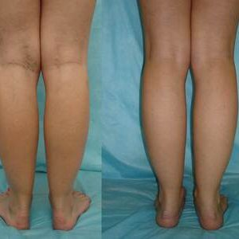

Zwykłe ludzie są przekonani, że pozbycie się żylaków bez interwencji chirurgicznej
i w krótkim czasie jest niemożliwe. Mimo że to stwierdzenie stało się nieistotne już w 2000 roku, wielu
nadal uważa, że tak jest.
Jednak w rzeczywistości nauka nie stoi w miejscu, szczególnie w dziedzinie
flebologii (nauki badającej strukturę, funkcję i patologie naczyń). Jednym z najnowszych odkryć na świecie
jest żel, który pomaga złagodzić objawy żylaków .
Jest uznawany przez ekspertów
za najlepszy środek, który pomaga wyeliminować żylaki. Innowacyjny produkt pomoże
znormalizować krążenie krwi, zapobiegać pojawieniu się pajączków, jest w stanie zapewnić skuteczne
kompleksowe pozbycie się objawów żylaków w domu w ciągu 1 miesiąca.
Objawy żylaków
Nienormalnie rozszerzone naczynia włosowate
Opuchnięte i wybrzuszone naczynia krwionośne
Wysypka
Swędzenie i ciężkość nóg
właściwości
Pomaga złagodzić ból i obrzęk
Pomaga zmniejszyć nieprawidłowe rozszerzenie naczyń
włosowatych
Stymuluje krążenie krwi
Pomaga wygładzić i nawilżyć skórę
Przy regularnym stosowaniu pomoże:
Złagodzić ból i obrzęk, przywrócić naturalny przepływ krwi.
Zmniejszyć ból i zminimalizować ryzyko zakrzepów krwi.
Poprawić stan naczyń krwionośnych, przywrócić im elastyczność.
Redakcja "Hello Health" przeprowadzała sondaż ze specjalistami w dziedzinie
flebologii, które mają wieloletni doświadczenie. Wszyscy mówili to samo: zdecydowanie polecają
swoim pacjentom.
Andrew Larson, specjalista w dziedzinie flebologii (ponad 30 lat
doświadczenia). W mojej praktyce było wcześniej kilka przypadków operowanych pacjentów.
Zwykle występuje to w trzecim lub czwartym stadium żylaków. Jednak pojawienie się żelu
zasadniczo zmieniło sytuację.
Ten wspaniały produkt może pomóc zarówno we wczesnych stadiach żylaków,
jak i w ciężkich przypadkach, gdy wydaje się, że bez operacji nie da się pomóc. Teraz zalecam operacje
tylko w bardzo trudnych przypadkach i radzę najpierw spróbować rozwiązać problem za pomocą tego żelu.
, bez wątpienia najlepszy
produkt do pozbycia się objawów
żylaków i zapobiegania ich wystąpieniu, w warunkach domowych.
Oto wyniki przed i po 1 miesiącu użytkowania tego żelu:
Monica Simpson, ekspert w dziedzinie zdrowia naczyniowego (ponad 11 lat
doświadczenia). Niewątpliwie jedną z zalet jest jego
skład. Żel ten zawiera
unikalne naturalne składniki, które skutecznie pomagają wyeliminować przyczyny żylaków.
Chcę podkreślić, że dzięki dużej ilości flawonoidów, garbników i witamin
zawartych w ekstrakcie z kasztanowca żel pomaga zwiększyć napięcie naczyń włosowatych i normalizować krążenie
krwi.
Efekt użycia tego żelu jest po prostu niesamowity. Uważam, że to rewolucyjny
produkt, który radykalnie zmienia podejście do pozbycia się żylaków i pozwala obejść się bez
bolesnych i kosztownych operacji. Ten żel może być stosowany przez osoby w każdym wieku!
Alex Nike, wiodący specjalista w dziedzinie flebologii (ponad 30 lat
doświadczenia). Do pomocy przy żylakach zdecydowanie polecam korzystanie z . Żel
ten z łatwością poradzi sobie nawet z trudnymi przypadkami, ułatwi stan pacjentów mających trzecią i
czwartą stadium choroby. Pomaga wyeliminować przyczynę żylaków, a nie tylko objawy.
Polecam również stosowanie tego żelu w celach zapobiegawczych, aby na pewno
zapobiec pojawieniu się żylaków w przyszłości.
W mojej praktyce było wiele przypadków, gdy pomógł w
ciężkich
przypadkach żylaków. Oto na przykład:
Żylaki: niebezpieczeństwo w liczbach
80%Kobiet
mają objawy przewlekłej niewydolności żylnej
20%Osób
cierpiących na żylaki muszą poddać się niebezpiecznej
operacji
65%Mają
zwiększone ryzyko żylaków, zwłaszcza jeśli w rodzinie występowały przypadki tej
choroby
70%Kobiet
w ciąży cierpi na żylaki
90%Kobiet
noszących obcasy powyżej 8 centymetrów cierpią na ból stóp przynajmniej raz w
tygodniu
Efektywność wykorzystania w liczbach
100%Nie
odczuwają bólu ani zmęczenia nóg
97%Zauważyli zniknięcie siatki naczyniowej.
96%Normalizowali pracę układu krążenia.
100%Nie
zauważyli żadnych skutków ubocznych.
95%Wybrzuszone i obolałe żyły zniknęły.
100% skuteczny produkt
Żel jest certyfikowany na terenie UE i dopuszczony do stosowania w krajach
europejskich. Poczujesz poprawę już po 1 miesiącu stosowania ! Warto spróbować!
Michael, 45 lat
Nogi stały się niebieskawe, żyły puchły. Przestałem ćwiczyć, ale problem nie
zniknął. Powiedziano mi, że pomoże tylko operacja. Ale żel rozwiązał
problem w ciągu miesiąca!
Nogi znów stały się normalne.
Agnieszka, 35 lat
Regularnie nakładam żel wieczorem po
pracy. Szybko łagodzi obrzęki
i zmęczenie, a także znacznie zmniejsza pocenie się stóp. Rano czuję, że moje nogi są jak nowe.
Polecam wszystkim.
Justyna A., 58 lat
Żel jest dla mnie
prawdziwym zbawieniem. Stosuję go codziennie.
Zaledwie kilka tygodni po rozpoczęciu jego używania zauważyłam widoczną redukcję wybrzuszonych naczyń
krwionośnych, moje nogi zaczęły wyglądać lepiej, czuję lekkość i energię nawet wieczorami
Justyna, 38 lat
Moje żyły na nogach były bardzo widoczne. Podczas konsultacji powiedziano
mi, że można je usunąć tylko chirurgicznie. Ale nie chciałam operacji. Nie chciałam mieć blizn na
nogach. Postanowiłam wypróbować żel , po 3 tygodniach stosowania ból i
obrzęk nóg
minęły. Po kolejnym tygodniu opuchnięte żyły prawie zniknęły.
Monika, 41 lat
Przez lata cierpiałam na żylaki pod kolanami. Żyły tam ciągle swędziały,
czasem bolały. W zeszłym roku zauważyłam, że żyły zaczęły puchnąć. I pomyślałam, że trzeba coś zrobić.
Poszedłem do specjalisty, a on zachęcił mnie do wypróbowania . To było
niesamowite, ale
zobaczyłam różnicę po pierwszym tygodniu używania tego żelu. Swędzenie i ból zniknęły niemal
natychmiast. A po kolejnych 2 tygodniach zauważyłam, że żyły pod kolanami prawie zniknęły.

Anna, 36 lat
Mam żylaki po ciąży. Krem, który polecono mi w aptece, dał mi tylko
tymczasowy efekt. Pończochy uciskowe były zbyt ciasne i nie mogłam w nich chodzić. Szczerze mówiąc,
prawie się poddałam i zdecydowałam się na operację, ale trafiłam na informacje o i kupiłam go.
Byłam zdumiona wynikiem: węzły żylne na nogach prawie zniknęły. Teraz moje nogi znów są tak piękne
jak wcześniej! Znowu mogę nosić krótkie spódniczki!
Agata, 67 lat
Mam żylaki dziedziczne. Cierpiałam całe życie. W młodości nie były zbyt
irytujący, a wraz z wiekiem stało się bardzo źle: żyła płonie ogniem, zwłaszcza jeśli cały dzień spędzam
na nogach lub noszę ciężkie torby. Moja córka niedawno kupiła i ten
żel mnie uratował!
Nigdy nie myślałam, że mogę tak szybko pozbyć się problemu, który męczył mnie przez całe życie.
Używam tego żelu przez ostatnie 6 miesięcy i zapomniałam o problemach z żyłami.
CZĘSTO ZADAWANE PYTANIA
Jakie mogą być skutki uboczne? +
Żel składa się z naturalnych
składników, nie zawiera
parabenów, barwników, syntetycznych aromatów i produktów GMO. Produkt przeszedł
certyfikację i nie ma przeciwwskazań. Nie powoduje alergii i skutków ubocznych.
Jak długo należy go używać? +
Czas trwania kuracji zależy bezpośrednio od stadium żylaków. Zwykle
pierwsze wyniki stosowania żelu są zauważalne po 1,5-2 tygodniach.
Gdzie kupić?+
Nasza firma jest jedynym oficjalnym dostawcą na terenie Unii
Europejskiej. Zamówienie można złożyć za pośrednictwem tej strony. Kupuj tylko oryginalny produkt
!